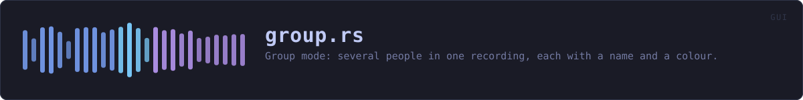

crates/veilvoice-gui/src/group.rs
veilvoice-gui · 653 lines · read the source
Group mode: several people in one recording, each with a name and a colour.
The engine has handled several speakers since veilvoice-conversation existed. This is the part of it a person can see: who is in the recording, what each of them is called, what colour each is drawn in, and which destination voice each becomes.
The toggle does not persist, and the tick that makes it persist is separate
Group mode changes what a recording is treated as. A mode that survives a restart is a mode somebody eventually forgets is on, and for this tool that means a single-speaker recording rendered against a plan that does not describe it — which silences everything the plan does not claim. So the toggle is per-run and off by default, and there is a second, explicit tick for "always start in group mode" which is the only thing written to disk.
Two controls where one would do, deliberately. They answer two different questions: is this recording a group recording and are most of my recordings group recordings.
Colour is assigned, never guessed from the voice
A speaker's colour is a function of their slot, exactly as their destination voice is, and for the same reason: anything chosen by measuring the input would make an output property a function of the input speaker, which is the linkage this whole project exists to destroy. Slot 0 and slot 1 are the furthest-apart pair in the table because two people is the common case; every slot after that is the colour whose nearest neighbour among the ones already used is furthest away. That order was computed rather than judged — see veilvoice_video::palette.
A colour can be overridden per speaker, from any colour in any of the nine palettes the website offers. An override is a person's choice about their own recording, made after the fact, and carries none of the linkage problem above.
Colour is never the only signal
The name is drawn beside every circle, in the list, and in the subtitles. Somebody who cannot separate two of these colours has the name, everywhere. A panel that distinguished speakers by colour alone would be one about eight per cent of men could not use.
WHAT THIS FILE CONTAINS
653 lines defining 20 functions (10 public), 3 types and 0 constants. Everything below is read out of the source, so it cannot disagree with the code.
The types it owns.
struct Personline 52 — One person, as the panel holds them.struct Outputsline 75 — What comes out of a group render.struct Groupline 102 — The group-mode panel's state.
What happens when it runs. These are the ways in: public, and nothing else in this file calls them, so they are what an outside caller reaches first.
Outputs::anyline 96 — Whether anything at all would be written.Group::start_fromline 134 — The panel as it should open, given the saved preference.
reachesdefaultGroup::lenline 142 — How many people are in the recording.Group::is_emptyline 147 — Whether there is nobody in it.Group::to_planline 195 — Build a plan from the panel: names in slot order, no turns.Group::tabline 211 — The whole panel.
reachesbody,mode_controls,output_controls,people_list,strip,add,colour,palette_picker,remove,at,assigned_colour,swatch
WHAT CALLS WHAT
The functions this file defines, and the calls between them. An edge means the callee's name appears, called, inside the caller's body — a syntactic reading, not a type-resolved one.
The same graph as Mermaid source
%%{init: {"theme":"base","themeVariables":{"background":"#1a1b26","primaryColor":"#1f2335","primaryTextColor":"#c0caf5","primaryBorderColor":"#7aa2f7","secondaryColor":"#16161e","tertiaryColor":"#16161e","lineColor":"#737aa2","textColor":"#c0caf5","mainBkg":"#1f2335","nodeBorder":"#7aa2f7","clusterBkg":"#16161e","clusterBorder":"#2f3549","fontFamily":"ui-monospace, SFMono-Regular, Consolas, monospace","fontSize":"14px"}}}%%
flowchart TD
n_at["Person::at<br/>line 61"]
n_default["Outputs::default<br/>line 85"]
n_any(["Outputs::any<br/>line 96"])
n_default["Group::default<br/>line 116"]
n_start_from(["Group::start_from<br/>line 134"])
n_len(["Group::len<br/>line 142"])
n_is_empty(["Group::is_empty<br/>line 147"])
n_colour["Group::colour<br/>line 152"]
n_add["Group::add<br/>line 165"]
n_remove["Group::remove<br/>line 181"]
n_to_plan(["Group::to_plan<br/>line 195"])
n_tab(["Group::tab<br/>line 211"])
n_body["Group::body<br/>line 223"]
n_mode_controls["Group::mode_controls<br/>line 284"]
n_strip["Group::strip<br/>line 338"]
n_people_list["Group::people_list<br/>line 373"]
n_palette_picker["Group::palette_picker<br/>line 441"]
n_swatch["Group::swatch<br/>line 480"]
n_output_controls["Group::output_controls<br/>line 502"]
n_assigned_colour["assigned_colour<br/>line 532"]
n_add --> n_at
n_body --> n_mode_controls
n_body --> n_output_controls
n_body --> n_people_list
n_body --> n_strip
n_colour --> n_assigned_colour
n_palette_picker --> n_assigned_colour
n_palette_picker --> n_swatch
n_people_list --> n_add
n_people_list --> n_colour
n_people_list --> n_palette_picker
n_people_list --> n_remove
n_start_from --> n_default
n_strip --> n_colour
n_tab --> n_body
click n_at href "https://github.com/tilas01/veilvoice/blob/main/crates/veilvoice-gui/src/group.rs#L61" "open the source"
click n_default href "https://github.com/tilas01/veilvoice/blob/main/crates/veilvoice-gui/src/group.rs#L85" "open the source"
click n_any href "https://github.com/tilas01/veilvoice/blob/main/crates/veilvoice-gui/src/group.rs#L96" "open the source"
click n_default href "https://github.com/tilas01/veilvoice/blob/main/crates/veilvoice-gui/src/group.rs#L116" "open the source"
click n_start_from href "https://github.com/tilas01/veilvoice/blob/main/crates/veilvoice-gui/src/group.rs#L134" "open the source"
click n_len href "https://github.com/tilas01/veilvoice/blob/main/crates/veilvoice-gui/src/group.rs#L142" "open the source"
click n_is_empty href "https://github.com/tilas01/veilvoice/blob/main/crates/veilvoice-gui/src/group.rs#L147" "open the source"
click n_colour href "https://github.com/tilas01/veilvoice/blob/main/crates/veilvoice-gui/src/group.rs#L152" "open the source"
click n_add href "https://github.com/tilas01/veilvoice/blob/main/crates/veilvoice-gui/src/group.rs#L165" "open the source"
click n_remove href "https://github.com/tilas01/veilvoice/blob/main/crates/veilvoice-gui/src/group.rs#L181" "open the source"
click n_to_plan href "https://github.com/tilas01/veilvoice/blob/main/crates/veilvoice-gui/src/group.rs#L195" "open the source"
click n_tab href "https://github.com/tilas01/veilvoice/blob/main/crates/veilvoice-gui/src/group.rs#L211" "open the source"
click n_body href "https://github.com/tilas01/veilvoice/blob/main/crates/veilvoice-gui/src/group.rs#L223" "open the source"
click n_mode_controls href "https://github.com/tilas01/veilvoice/blob/main/crates/veilvoice-gui/src/group.rs#L284" "open the source"
click n_strip href "https://github.com/tilas01/veilvoice/blob/main/crates/veilvoice-gui/src/group.rs#L338" "open the source"
click n_people_list href "https://github.com/tilas01/veilvoice/blob/main/crates/veilvoice-gui/src/group.rs#L373" "open the source"
click n_palette_picker href "https://github.com/tilas01/veilvoice/blob/main/crates/veilvoice-gui/src/group.rs#L441" "open the source"
click n_swatch href "https://github.com/tilas01/veilvoice/blob/main/crates/veilvoice-gui/src/group.rs#L480" "open the source"
click n_output_controls href "https://github.com/tilas01/veilvoice/blob/main/crates/veilvoice-gui/src/group.rs#L502" "open the source"
click n_assigned_colour href "https://github.com/tilas01/veilvoice/blob/main/crates/veilvoice-gui/src/group.rs#L532" "open the source"
classDef entry fill:#1f2335,stroke:#7aa2f7,color:#c0caf5
class n_any,n_start_from,n_len,n_is_empty,n_to_plan,n_tab entry
classDef api fill:#1f2335,stroke:#7dcfff,color:#c0caf5
class n_colour,n_add,n_remove,n_assigned_colour api
classDef helper fill:#1f2335,stroke:#bb9af7,color:#c0caf5
class n_at,n_default,n_default,n_body,n_mode_controls,n_strip,n_people_list,n_palette_picker,n_swatch,n_output_controls helperThis site loads no third-party script, so it cannot run Mermaid; the diagram above is the same nodes and edges drawn by the generator instead. GitHub renders the source below directly.
ITEMS
| Item | Line | Documentation |
|---|---|---|
Person pub struct | 52 | One person, as the panel holds them. |
Person::at fn | 61 | A person with the default name for their slot. |
Outputs pub struct | 75 | What comes out of a group render. |
Outputs::default fn | 85 | |
Outputs::any pub fn | 96 | Whether anything at all would be written. |
Group pub struct | 102 | The group-mode panel's state. |
Group::default fn | 116 | |
Group::start_from pub fn | 134 | The panel as it should open, given the saved preference. |
Group::len pub fn | 142 | How many people are in the recording. |
Group::is_empty pub fn | 147 | Whether there is nobody in it. |
Group::colour pub fn | 152 | The colour a slot is drawn in: the override, or the one it is given. |
Group::add pub fn | 165 | Add a person, if there is room for one. |
Group::remove pub fn | 181 | Remove one person, keeping at least two. |
Group::to_plan pub fn | 195 | Build a plan from the panel: names in slot order, no turns. |
Group::tab pub fn | 211 | The whole panel. |
Group::body fn | 223 | Everything inside the scroller. |
Group::mode_controls fn | 284 | The two controls that decide whether group mode is on. |
Group::strip fn | 338 | The picture: a circle per person, in their colour, with their name. |
Group::people_list fn | 373 | One row per person: colour, name, and a way to remove them. |
Group::palette_picker fn | 441 | Every colour in every palette, as swatches. |
Group::swatch fn | 480 | One clickable colour. |
Group::output_controls fn | 502 | What a render writes. |
assigned_colour pub fn | 532 | The colour a slot is given, as an egui colour. |